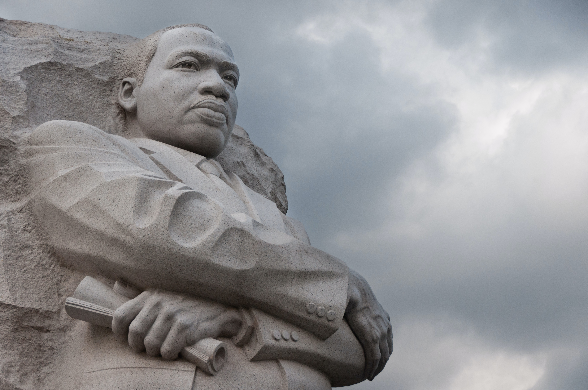

Martin Luther King Jr. y su Legado en la Promoción de la Cultura de Paz
Martin Luther King Jr., un líder icónico del Movimiento por los Derechos Civiles en los Estados Unidos, se destacó por su defensa de la justicia social, la igualdad y la no violencia. Su influencia trascendió las fronteras de América y se convirtió en un faro de esperanza y un modelo a seguir para aquellos que luchaban por la cultura de paz en todo el mundo. La vida y el legado de Martin Luther King Jr. nos enseñan lecciones valiosas sobre cómo promover la paz y la justicia a través del activismo no violento.
Un Líder de la No Violencia
Martin Luther King Jr. se adhirió firmemente al principio de la no violencia como estrategia para lograr cambios sociales y políticos significativos. Inspirado en las enseñanzas de Mahatma Gandhi y la filosofía de la no violencia, King creía que el cambio debía lograrse a través de la protesta pacífica y la resistencia civil. Esta filosofía no solo marcó su liderazgo en el Movimiento por los Derechos Civiles en Estados Unidos, sino que también sirvió de ejemplo para movimientos de derechos civiles en todo el mundo.
"Tengo un Sueño"
Uno de los discursos más icónicos de Martin Luther King Jr. fue su famoso "Tengo un Sueño". En este discurso, King compartió su visión de un mundo en el que la gente sería juzgada por el contenido de su carácter en lugar del color de su piel. Abogó por la igualdad de derechos y oportunidades para todos los ciudadanos, independientemente de su raza. Este discurso resonó no solo en Estados Unidos, sino en todo el mundo, inspirando a quienes luchaban contra la discriminación y la segregación racial.
Resistencia Pacífica y Desobediencia Civil
El activismo de Martin Luther King Jr. se basó en la resistencia pacífica y la desobediencia civil. Organizó marchas, boicots y protestas que buscaban cambiar leyes y prácticas injustas. A pesar de la violencia y la represión que enfrentaron él y sus seguidores, King se mantuvo firme en su compromiso con la no violencia, lo que envió un poderoso mensaje al mundo sobre la posibilidad de lograr cambios significativos a través de medios pacíficos.
Legado Duradero
El asesinato de Martin Luther King Jr. en 1968 fue un golpe devastador, pero su legado perdura. Su lucha por los derechos civiles y su compromiso con la no violencia inspiraron a generaciones de activistas a nivel mundial. La celebración del Día de Martin Luther King Jr. es un recordatorio constante de la importancia de la cultura de paz y la igualdad en la sociedad.